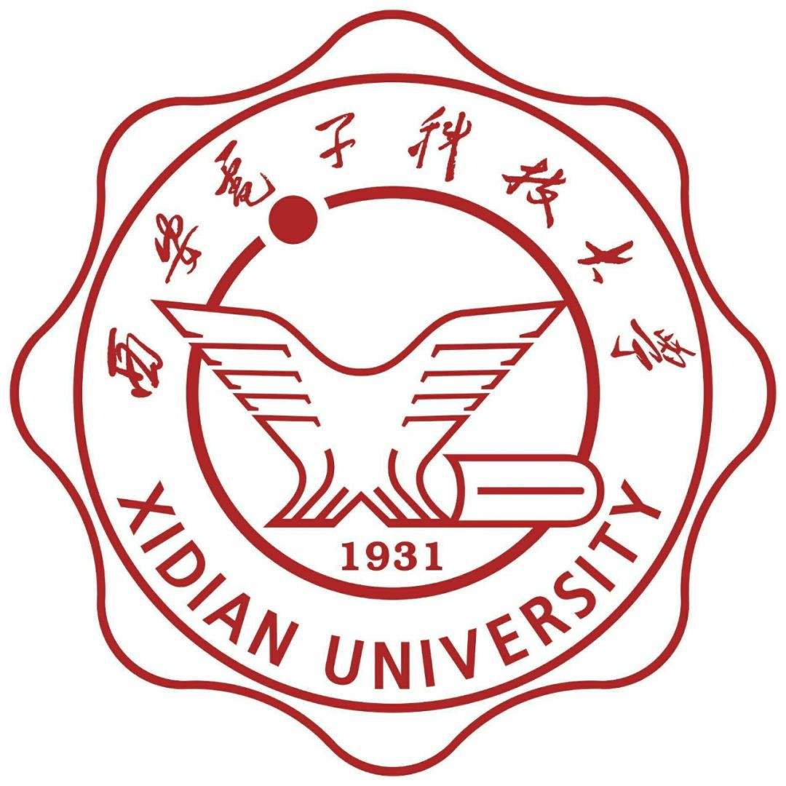

李奕彤 (Yitong Li)
博士研究生 |
关于我
我目前在 西安交通大学人工智能学院 攻读博士学位，师从孙宏滨教授。 在此之前, 我于2023年6月在 西安电子科技大学人工智能学院 计算机技术专业获得了硕士学位, 期间接触了基于深度学习的遥感目标检测与智能信号识别。
我的研究兴趣主要包括: 端到端自动驾驶, 大模型等。
教育经历
 |
博士生 西安交通大学 (2023.9 ~ )
|
|  | 硕士 西安电子科技大学 (2020.9 ~ 2023.6)
|
论文
Detail enhancement of infrared image based on bi-exponential edge preserving smoother
Yitong Li, Ning Liu, Ji Xu, Jinzhi Wu
Optik, 2019. [PDF]
Infrared scene-based non-uniformity correction based on deep learning model
Yitong Li, Ning Liu, Ji Xu
Optik, 2020. [PDF]
Harnessing the Power of SVD: An SVA Module for Enhanced Signal Classification
Lei Zhai, Shuyuan Yang, Yitong Li, Zhixi Feng, Zhihao Chang, Quanwei Gao
Proceedings of the AAAI Conference on Artificial Intelligence, 2023. [PDF]
Learning Cross-Domain Features With Dual-Path Signal Transformer
Lei Zhai, Yitong Li, Zhixi Feng, Shuyuan Yang, Hao Tan
IEEE Transactions on Neural Networks and Learning Systems, 2024. [PDF]
VLR-Driver: Large Vision-Language-Reasoning Models for Embodied Autonomous Driving
Fanjie Kong, Yitong Li, Weihuang Chen, Chen Min, Yizhe Li, Zhiqiang Gao, Haoyang Li, Zhongyu Guo, Hongbin Sun
International Conference on Computer Vision, 2025. [PDF]
CLOSE: Low-Cost Plug-and-Play Robustness Enhancement Module for Autonomous Driving
Yitong Li, Fanjie Kong, Zifan Han, Haonan Hou, Xuchong Zhang, Hongbin Sun
The Thirty-ninth Annual Conference on Neural Information Processing Systems, Under Review.
学术竞赛
-
全国大学生数模竞赛江苏赛区一等奖2016-2017
-
中国研究生电子设计竞赛华东赛区二等奖2017-2018
-
第四届“中科星图杯”遥感图像解译软件大赛 高分辨率SAR图像中船舶检测科目 第五名2020-2021
-
第五届“中科星图杯”遥感图像解译软件大赛 高分辨率光学卫星视频中多目标跟踪科目 第六名2021-2022
科研项目
自动驾驶多模块一体化感知框架预研
负责人
经费: 300万元
时间：2025-2026
xxx盲分选识别技术研究
装备预研重点实验室创新发展基金项目
负责人
经费: 50万元
时间：2021-2022